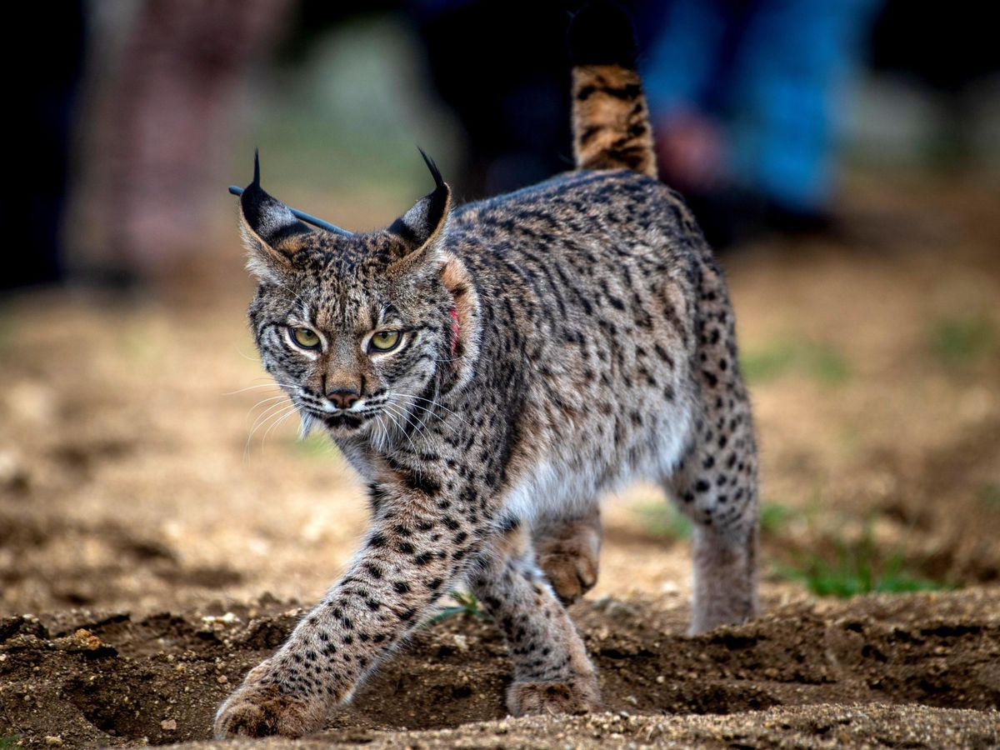
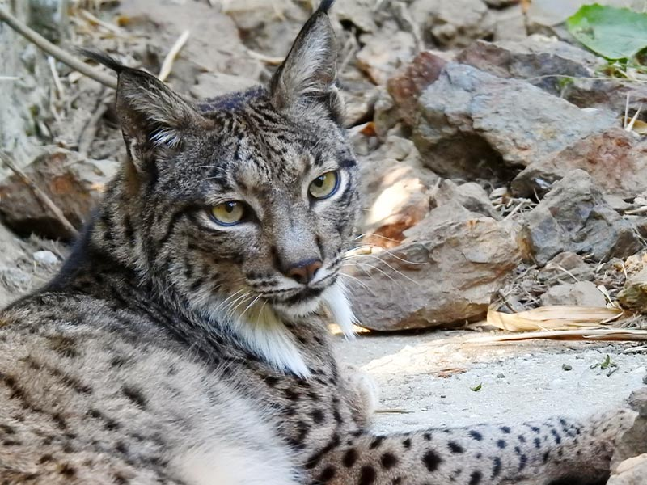

La población ibérica de 'Lynx pardinus' ha batido un nuevo récord, con un total de 1.365 ejemplares censados en la actualidad, entre adultos, subadultos y cachorros nacidos en 2021. Como fruto de los esfuerzos que las distintas administraciones realizan en torno a la conservación de la especie, ésta ha pasado recientemente (junio de 2015) de la categoría “En Peligro Crítico” a la categoría “En Peligro” en la Lista Roja de la UICN
Con pinta de gato salvaje, los linces habitan únicamente en el hemisferio norte. Se conocen cuatro especies diferentes, tres de ellas gozan de muy buena salud, mientras que la cuarta es una de las especies más amenazadas del planeta: el lince ibérico. Se trata de un felino de aspecto grácil, con patas largas y una cola corta con una borla negra en el extremo que suele mantener erguida batiéndola en momentos de peligro o excitación. El lince ibérico se encuentra en el bosque y matorral mediterráneo, en zonas muy restringidas de la península ibérica. En España en muy pocas áreas, bien conservadas y aisladas de la actividad humana, mientras que en Portugal, su población se encuentra en aumento, especialmente en el espacio protegido del Valle del Guadiana. Este tipo de hábitat le proporciona refugio y pastos abiertos para cazar conejos, que suponen el 90 % de su dieta.